Xochimilco: The canals of Xochimilco are the last remnant of the lake system the Aztecs lived on. Between them lie chinampas, artificially built-up "floating gardens", a farming method more than 1,000 years old – UNESCO World Heritage since 1987. You rent a trajinera, a brightly painted flat boat that a boatman punts through the canals with a long pole.
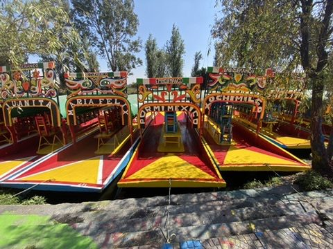
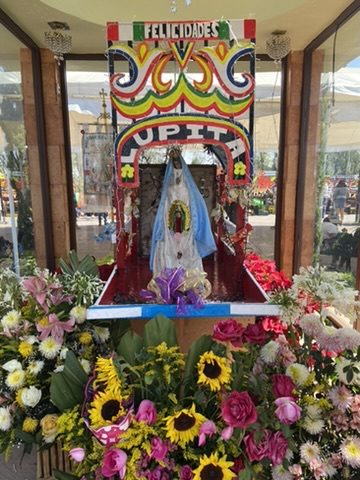
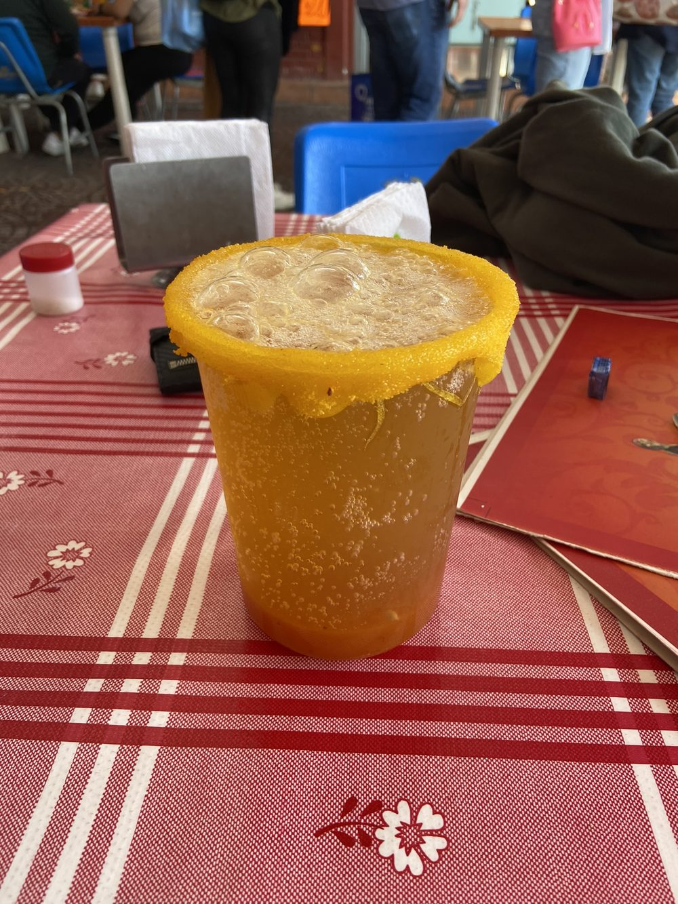
Essential on board: a michelada.
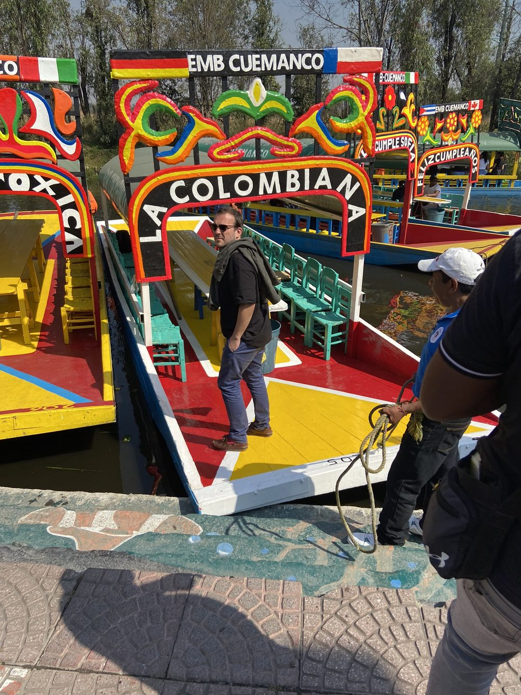
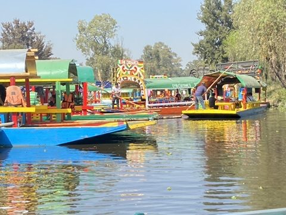
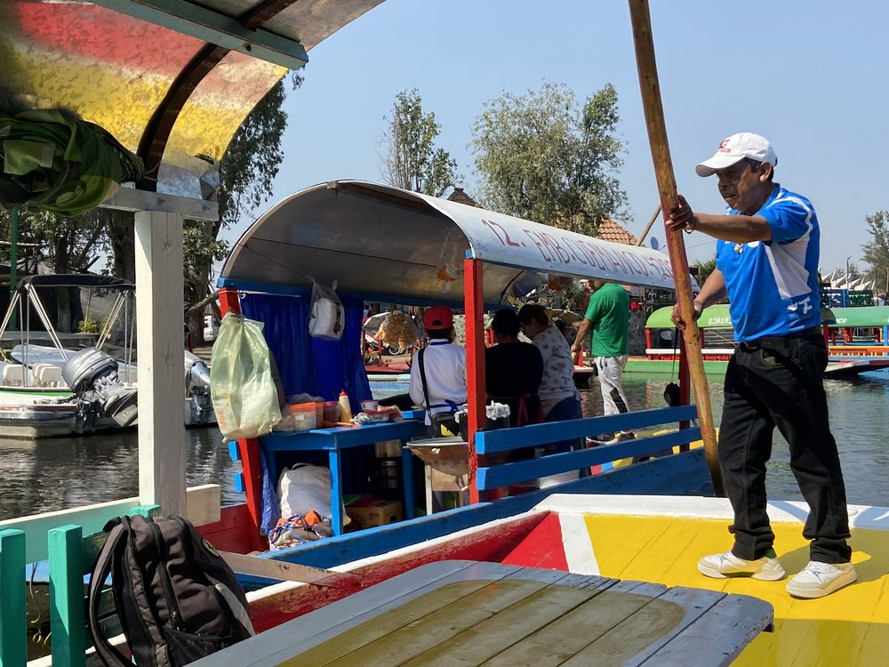
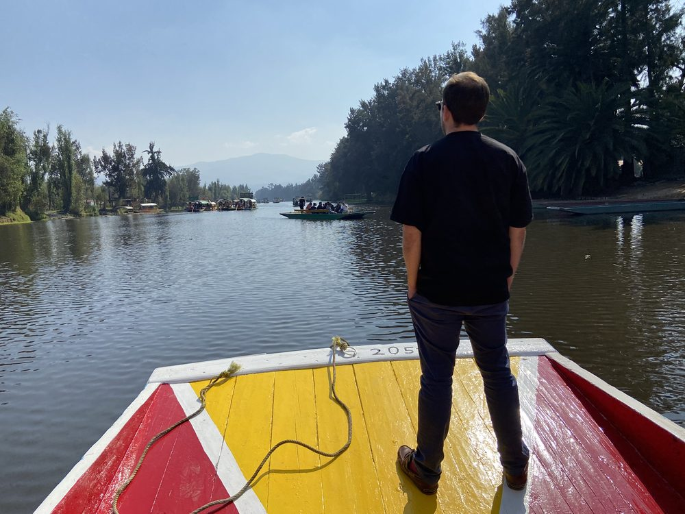
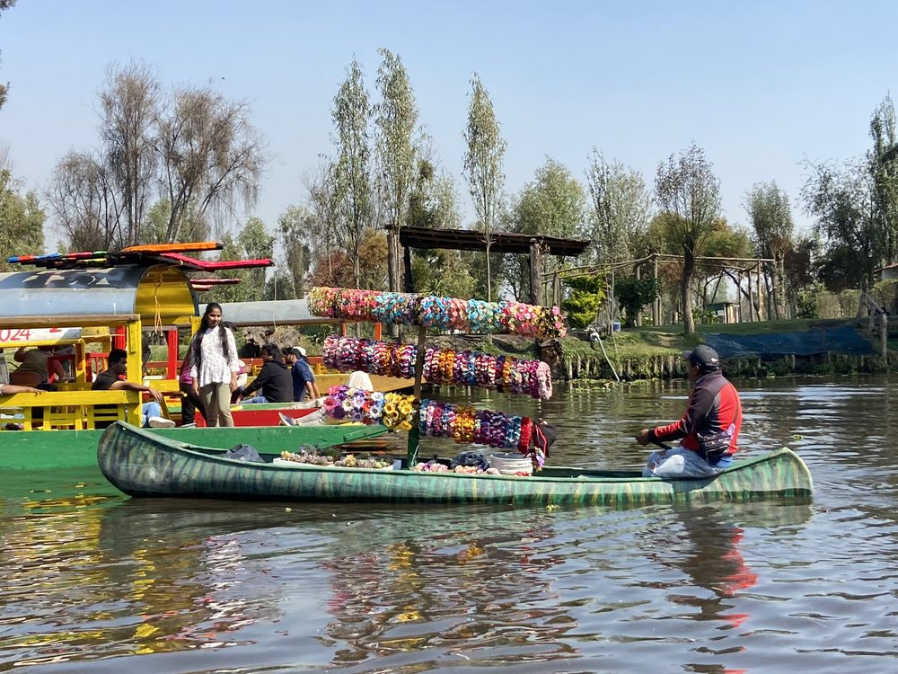
Floating vendors: snacks, flowers, blankets and entire mariachi bands pull up alongside by boat.
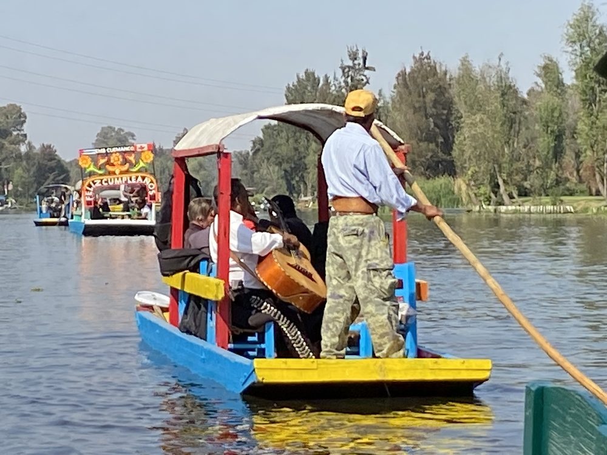
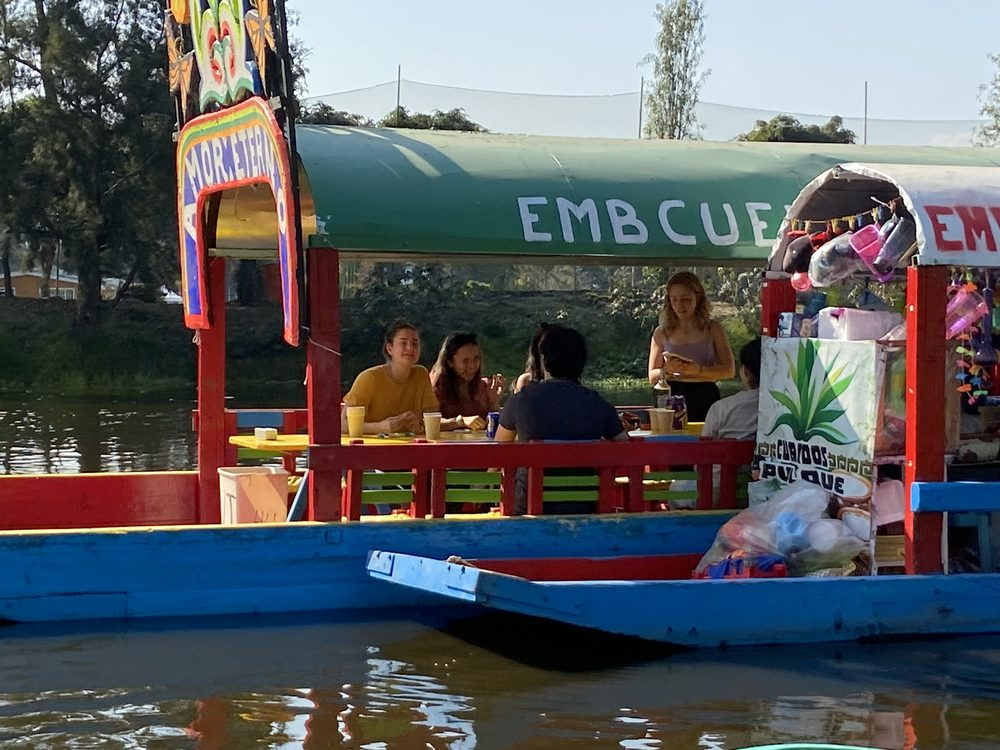
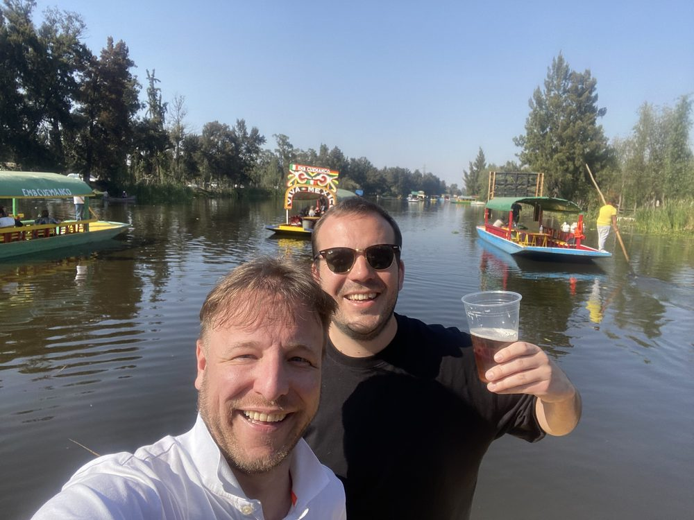
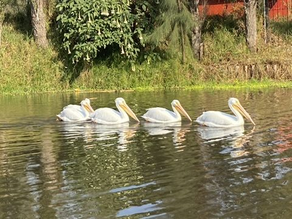
Surprise: pelicans. American white pelicans spend the winter in Xochimilco.
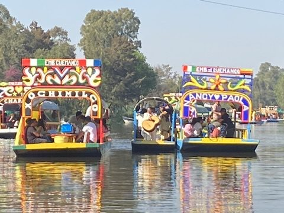
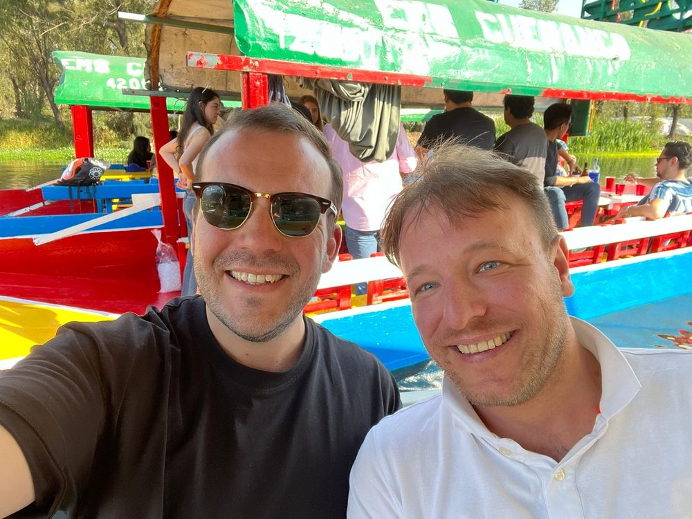
Dinner: Back in town: dinner at a restaurant in Hipódromo, modern Mexican cuisine on the plate.
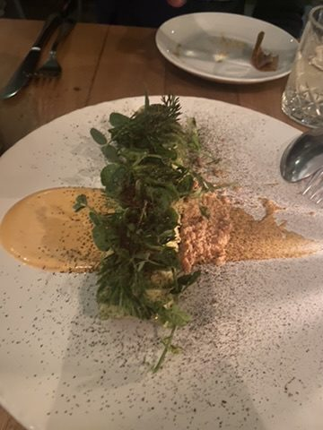